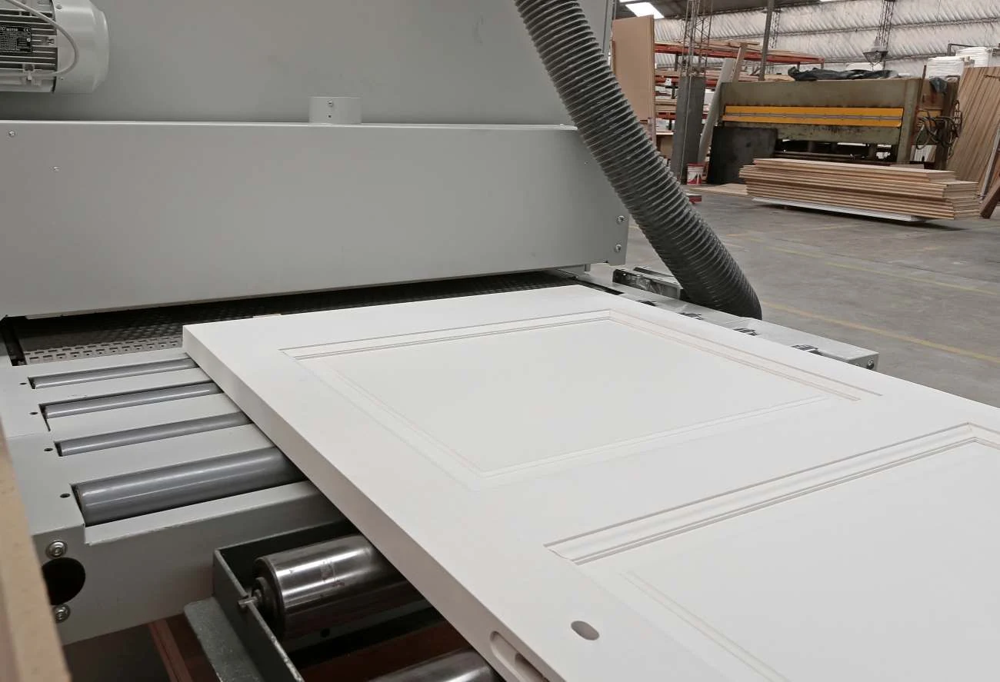
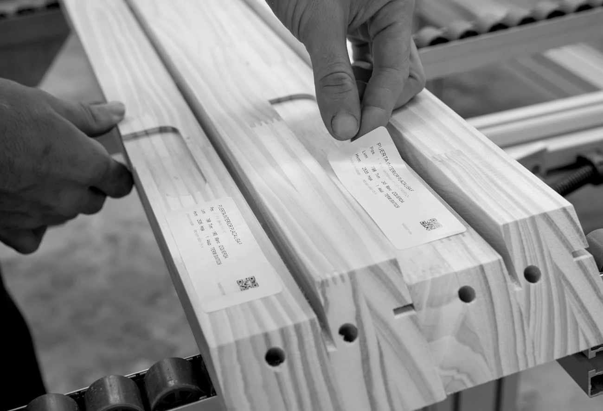

Elegí una línea
Compará superficies lisas, diseños de tableros y las terminaciones de cada producto.
Encontrá líneas, terminaciones y documentación técnica para avanzar con las decisiones de tu obra.

Compartí con nuestro equipo las necesidades de tu obra. Consultá las opciones disponibles y las condiciones comerciales para tu proyecto.
Consultá por tu proyectoUn recorrido claro para definir productos y preparar tu consulta.
Compará superficies lisas, diseños de tableros y las terminaciones de cada producto.
Conocé los sistemas de marcos y sus medidas de hoja, paso y abertura de mampostería.
Descargá fichas de productos y sistemas para conversar con el equipo de proyecto.

Puertas simples, dobles, corredizas y otras configuraciones según la línea. Las fichas de Aldeana y Burdeos incluyen también versiones con vidriado superior.
Consultá la combinación de diseño, terminación, marco y medidas que necesita tu proyecto.
Contanos sobre tu obra